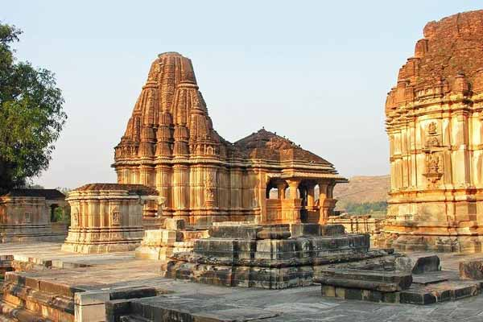
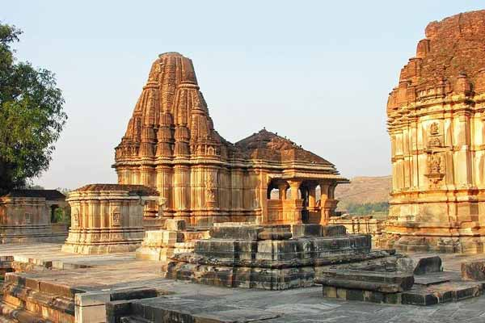

Eklingji Temple
 

Eklingji Temple
Eklingji (Hindi: Ekaliṅga jī, pronounced [ekliŋɡᵊ d͡ʒiː]) is a Hindu temple complex in Udaipur District of Rajasthan in western India. It is situated in Kailashpuri village (at Girwa Tehsil, Udaipur), near the former capital of Mewar, i.e., Nagda.[1] Eklingji is believed to be the ruling god ( Kula devata ) of Mewar Princely State and the Maharana of the Royal dynasty rules as his Dewan(Minister).
History
According to the 15th century text Ekalinga Mahatmya, the original temple at Eklingji was constructed by the 8th century ruler Bappa Rawal.[2] The original temple and Vigraha (idol) were destroyed during invasions by the Delhi Sultanate rulers.
The earliest extant idol was installed by Hamir Singh (14th century), who also carried out extensive renovations to the main temple. Rana Kumbha (15th century) rebuilt the temple, in addition to constructing a Vishnu temple. His 1460 inscription describes him as "the personal servant of Ekling".
In the late 15th century, Ghiyath Shah of Malwa Sultanate attacked Mewar, and devastated Eklingji's temple. Kumbha's son Rana Raimal (r. 1473–1509) defeated and captured him, and obtained a ransom for his release. With this ransom, Raimal patronized the last major rebuilding of the temple complex, and installed the present murti at the main temple.
Originally, the temple likely belonged to the Pashupata sect, and was subsequently in the custody of the Nath sect. In the 16th century, it came under the control of the Ramanandis.